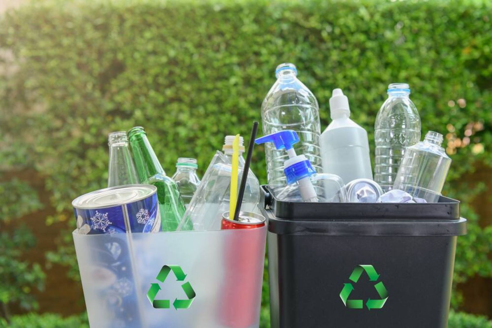

Kenali jenis sampahmu dan buang sampah dengan tepat!
Waste Detector merupakan platform digital yang menyediakan layanan klasifikasi dan deteksi sampah berdasarkan Organik dan Anorganik. Platform ini dibuat guna memberikan edukasi serta kemudahan kepada masyarakat dalam mendeteksi sampah di sekitar mereka. Selain itu, pada platform ini juga menggunakan website yang telah terintegrasi dengan sistem pemodelan machine learning sebagai pendeteksi jenis sampah.
Lakukan deteksi dengan scan dan membuka kamera, menggunggah gambar bahkan kalian juga dapat mengunduh gambar kalian loh!. Deteksi sampahmu dan bijak membuang sampah yang sesuai ya!